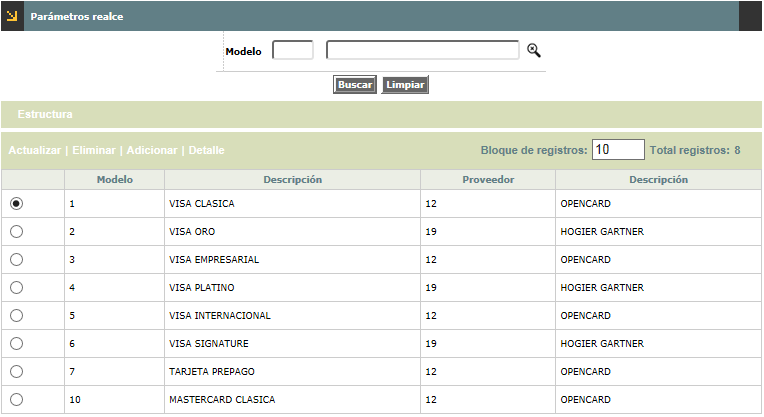
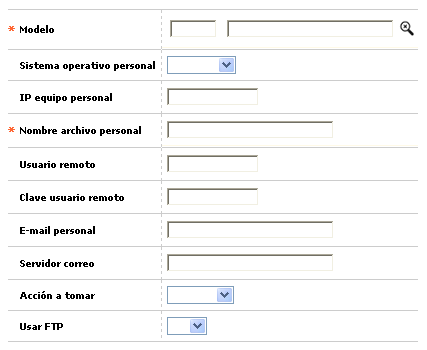
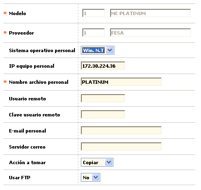
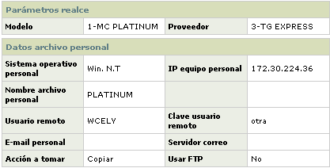
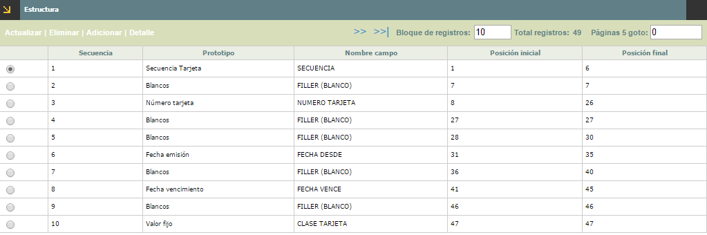
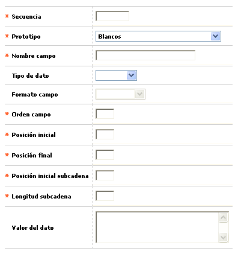
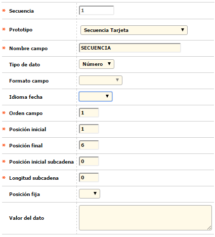

Par�metros realce |
Mediante esta funci�n se permite la consulta o mantenimiento de la tabla que contiene los par�metros que el sistema tiene en cuenta al generar el archivo de realce de pl�sticos.
Estos campos contienen la informaci�n b�sica necesaria para identificar y ubicar el archivo cuando �ste no se encuentra en el servidor de la entidad sino en alguno de los equipos cliente, y para facilitar el acceso remoto al mismo.

El formulario contiene las opciones Actualizar, Eliminar, Adicionar y Detalle. Adicionalmente, muestra la opci�n Estructura en la parte superior.
Adicionar: Si el usuario invoca la opci�n Adicionar se despliega un formulario con los siguientes campos.

Modelo |
Campo obligatorio que posee lista de valores poblada a trav�s de la opci�n Modelos pl�sticos del grupo de Tablas de la entidad del N�cleo, de la que debe seleccionarse el modelo f�sico a parametrizar. Una vez diligenciado este campo se llena autom�ticamente el siguiente. |
Sistema operativo personal |
Campo con lista de valores propios que permite seleccionar el sistema operativo utilizado por la entidad. |
IP equipo personal |
Contiene la direcci�n del equipo del usuario remoto lo que permitir� la comunicaci�n con �l desde otros equipos. |
Usuario remoto |
En este campo se registra el nombre que identifica al usuario del cual se requiere tomar o al cual se le debe enviar un archivo en particular. |
Clave usuario remoto |
Campo alfanum�rico de hasta 15 posiciones que contiene la clave con la cual se identifica el usuario remoto. |
E-mail personal |
En este campo se registra la direcci�n de correo electr�nico del usuario. |
Servidor correo |
Identifica el sistema de administraci�n de correo utilizado. |
Acci�n a tomar |
Conjunto de campos en los que se selecciona entre Copiar, Mover o Ninguna la acci�n que se debe ejecutar con el archivo indicado. |
| Usar FTP | Campo con lista de valores que determina Si o No se utiliza el protocolo FTP para el intercambio de archivos. |
Actualizar: Si el usuario invoca la opci�n Actualizar se despliega un nuevo formulario en el cual los �nicos campos modificables son: Sistema operativo personal, IP equipo personal, Nombre archivo personal, Usuario remoto, Clave usuario remoto, E-mail personal, Servidor correo, Acci�n a tomar, y Usar FTP:

Detalle: Si el usuario invoca la opci�n Detalle se despliega el siguiente formulario:

Estrutura
Al invocar la v�nculo Estructura, el sistema muestra el siguiente formulario:

Este formulario muestra el conjunto de campos que permiten determinar la secuencia y relaci�n de los campos incluidos dentro del archivo de realce.
El formulario contiene las opciones Actualizar, Eliminar, Adicionar y Detalle.
Adicionar: Si el
usuario invoca la opci�n Adicionar se despliega el siguiente formulario:

Secuencia |
Campo num�rico de 6 d�gitos, obligatorio, en el que se indica el orden en que aparecen los campos dentro del archivo de realce. |
Prototipo |
Este campo obligatorio posee lista de valores adjunta de la que debe seleccionarse el tipo de dato cuya informaci�n hace parte del archivo de realce. |
Nombre de campo |
Campo alfanum�rico de 30 d�gitos, obligatorio, en el que debe registrarse un descriptivo de lo que contiene el campo. |
Tipo de dato |
Este campo no obligatorio, cuenta con lista de valores adjunta de la que puede seleccionarse entre N�mero, Car�cter o Fecha, la clase de dato asociado al prototipo. |
Formato de campo |
Campo no obligatorio que provee lista de valores adjunta que aplica para los prototipos relacionados con fechas, de la que puede seleccionarse el formato en que se presenta el dato. |
Idioma campo |
Campo no obligatorio que provee lista de idiomas la cual se quiere trabajar dentro de la estructura. |
Orden campo |
En este campo num�rico de 4 d�gitos, obligatorio, se registrarse el lugar que ocupa el campo dentro del registro. |
Posiciòn inicial |
Campo num�rico de 4 d�gitos, obligatorio, en el que debe indicarse la posici�n inicial que ocupa el campo dentro de la estructura del registro. |
Posiciòn final |
En este campo num�rico de 4 d�gitos, obligatorio, de indica la posici�n final que ocupa el campo dentro de la estructura del registro, la pantalla controla que el valor registrado sea mayor o igual al definido en el campo Posici�n inicial. |
Posiciòn inicial subcadena |
Campo num�rico de 4 d�gitos, no obligatorio, en el que debe indicarse la posici�n inicial del resultado obtenido cuando se quiere substraer una parte de la cadena de datos del registro. |
Longitud subcadena |
En este campo numérico de 4 dígitos, no obligatorio, se digita la cantidad de posiciones del resultado obtenido cuando se quiere substraer una parte de la cadena de datos del registro. |
Posición fija |
En este campo no obligatorio, de indica la posición fija que ocupa el campo dentro de la estructura del registro. |
Valor del dato |
Campo alfanum�rico de 10 posiciones, no obligatorio, en el que puede registrarse un valor fijo para campos de tipo constantes. |
Nota importante: para permitir el cargue de archivos para aplicar masivamente el control de inventario y el acuse de recibo a los diferentes plásticos bien sea de tarjetas crédito, débito u otros, se requiere que todos los modelos tengan parametrizado dentro de la estructura del archivo la 'Secuencia' que identifica a cada plástico. Se sugiere que está vaya ubicada en todos los archivos en la misma posicón, bien al comienzo o al final para todos los modelos.
Actualizar: Si el usuario invoca la opci�n Actualizar se despliega un nuevo formulario en el cual los �nicos campos modificables son: Prototipo, nombre campo, Tipo de dato, Formato campo, Orden campo, Posici�n inicial, Posici�n final, Posici�n inicial subcadena, Longitud subcadena, y Valor del dato.

Detalle: Si el usuario invoca la opci�n Detalle se despliega el siguiente formulario: